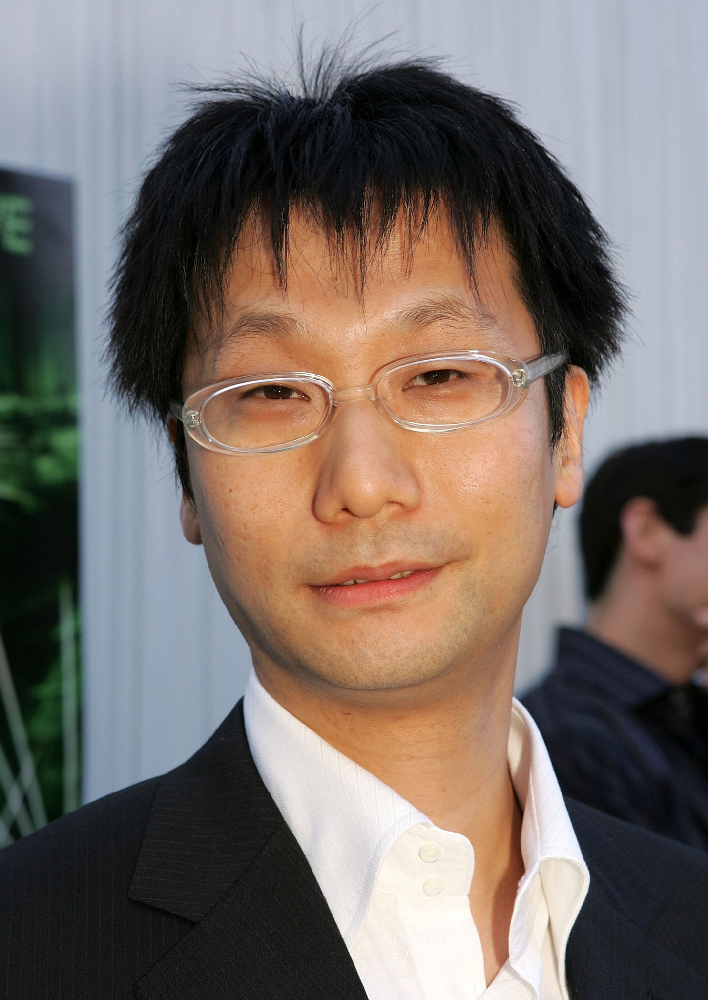

Hideo KojimaHideo Kojima has been a part of gamers' lives for more than 20 years. Since his start at Konami in 1986, Kojima has produced and directed some of the game industry's most influential titles. His first foray, Metal Gear, is considered the first stealth-action game and it birthed a genre that's since spawned many of the industry's most popular titles. It even impacted other genres with stealth influences meaning games like Tenchu, Splinter Cell and countless other owe Metal Gear quite a lot. Kojima's film-inspired style didn't evolve out of nowhere as he grew up fascinated by the movie business. At first, videogames were just a hobby (Kojima began college as an economics major), but his natural inclination towards telling a good story and the possibilities that videogame design presented him was enough for a push into game design near the end of his university career. The world of interactive entertainment hasn't been the same since. |
Richard GarriotRichard "Lord British" Garriott has been to space, which is totally sweet. But that's not why he's on this list. Garriott is on this list because he's created immersive videogame universes that let players live out their fantasies. Garriott created the Ultima series, a long running and critically acclaimed franchise of role-playing games that essentially kick-started the genre. Ultima was huge, with nine main titles, broken up into three game trilogies spanning nearly 20 years. But its epic scope wasn't its only merit it was because the series successfully adapted the character creation system, settings, and storytelling techniques that made pen and paper rp games like Dungeons & Dragons so popular. In other words, it was a D&D fan's wet dream. His success with MMOs continued with City of Heroes and City of Villains in this decade, in addition to his most recent project, Tabula Rasa, a futuristic persistent online RPG that combines shooting game elements with more traditional role-playing design. |

Tod HowardWhile many gamers will recognize Todd Howard from his more recent works, The Elder Scrolls III: Morrowind and The Elder Scrolls IV: Oblivion, his career has spanned one of the most turbulent eras in the short history of videogames. Howard began his professional life in gaming at Bethesda Softworks in 1994, a time when games still shipped on floppy disks and first-person shooters were controlled with arrow keys. But as the technical possibilities for graphics and gameplay have expanded greatly since 1994, Howard's games have always pushed the limits of what is possible in each era. From the mouse swipe melee combat and massive randomly-generated environments of Elder Scrolls: Arena to the narrative of Fallout 3, which begins the minute the player is born, Howard has an impressive track record of pushing gaming into territory that few other designers would dare to go. |